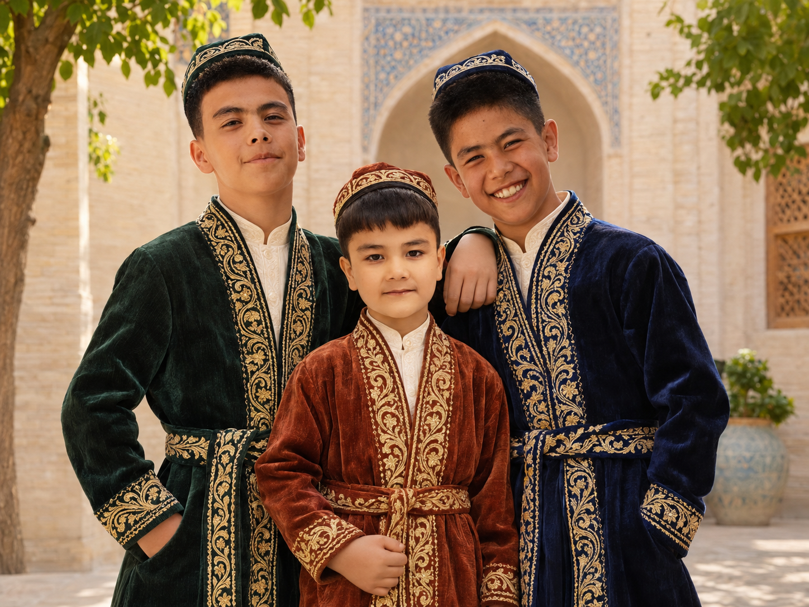

✳ БИСМИЛЛАҲИР РОҲМАНИР РОҲИЙМ
Уч фарзанд.
Бир олам қувонч.
Мадияр · Данияр · Абдуллох
Суннат тўйига таклифнома
20
НОЯБРЬ
2026 ЙИЛ
Нахорги ош
«Нур» тойхонаси
01 — СИЗГА ТАКЛИФ
Ҳурматли
азиз меҳмонимиз!
Сизни ва оила аъзоларингизни азиз фарзандларимиз Мадияр, Данияр ва Абдуллохнинг суннат тўйлари муносабати билан ёзиладиган дастурхонимизга лутфан таклиф этамиз.
ТЎЙ ЭГАЛАРИ
Якубжон ҳожи ўғли
Умиджон ва Саиджон
Махмудовлар оиласи
02 — ШОДИЁНА ҚАҲРАМОНЛАРИ
Уч исм. Уч бахт.
Хонадонимизнинг қувончи, келажагимизнинг нури.

ШУ КУННИ БЕЛГИЛАБ ҚЎЙИНГ
20ноябрьЖУМА2026
03 — САНА ВА МАНЗИЛ
Файзли тонг.
Қадрдон давра.
01 / МАРОСИМ
Нахорги ош
Яхши ниятлар ва самимий дуолар билан.
04 — ДИЙДОР ҒАНИМАТ
Ташрифингиз —
биз учун катта ҳурмат.
Хонадонимизга файз, дастурхонимизга
барака бўлиб келинг.
00Кун
00Соат
00Дақиқа
00Сония
Мадияр · Данияр · Абдуллох
20 ноябрь 2026 · Нахорги ош · «Нур» тойхонаси